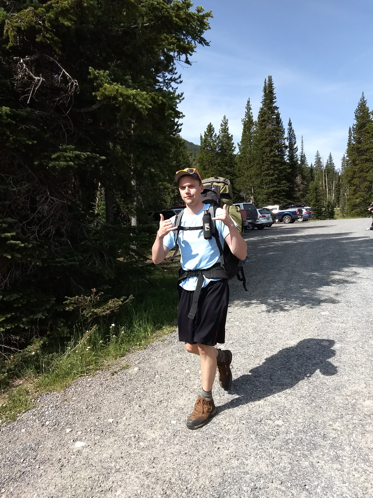
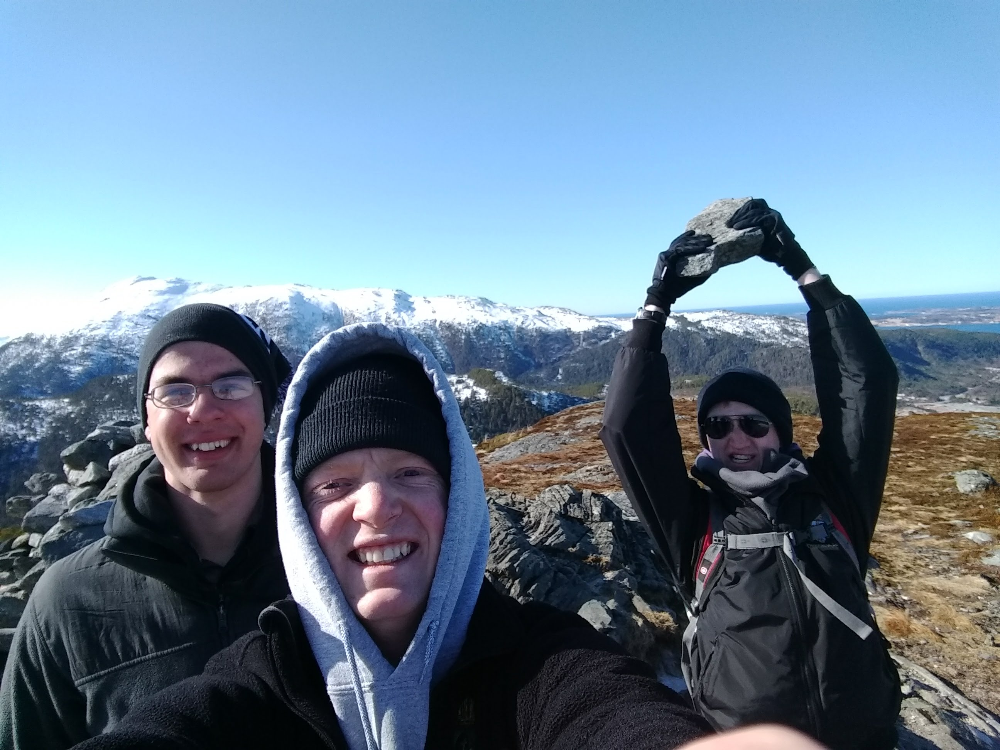

About this Website
About the project
This project was created in the following with the javascript frameworks Jquery and Vue as well as CSS frameworks Skeleton. The website was served using NodeJs and the Express framework. The data for the courses and sections was scraped from the St. Thomas class finder
Demo video
About us

Douglas Weber
My name is Douglas Weber. I am a senior in my final semester at St. Thomas. For the first two and a half years at St. Thomas, I was a memeber of St. John Vianney Seminary studying Philosophy and Catholic Studies. When I left the seminary, I decide to add a Computer Science major. I have loved studying this and will begin working at software consulting company in January. Some of my hobbies are bowling, playing guitar, and singing.